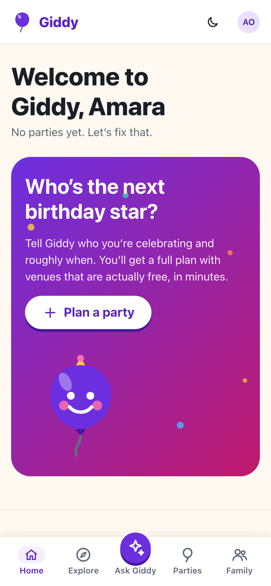
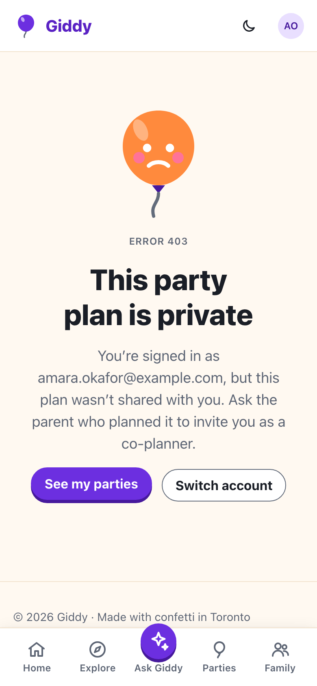
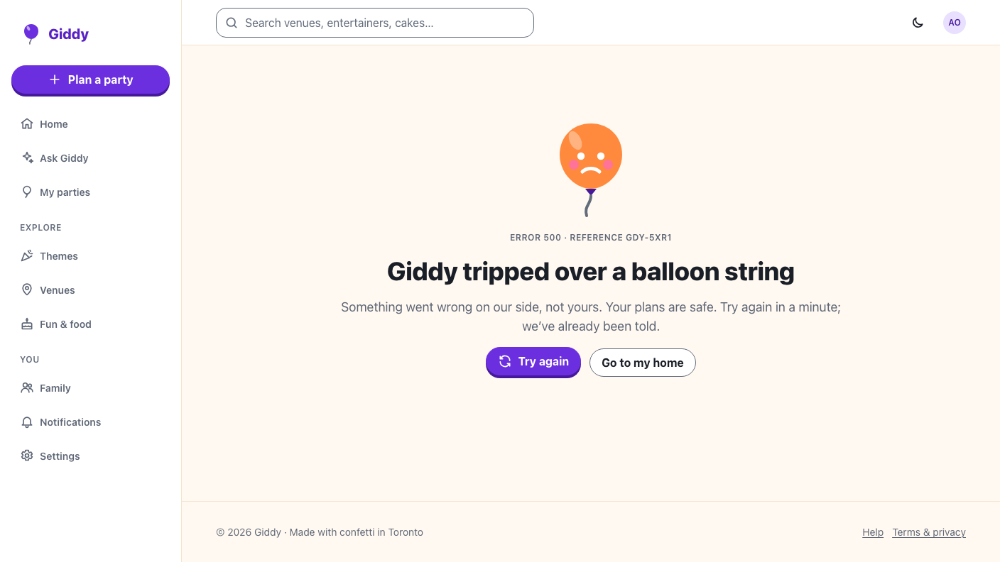
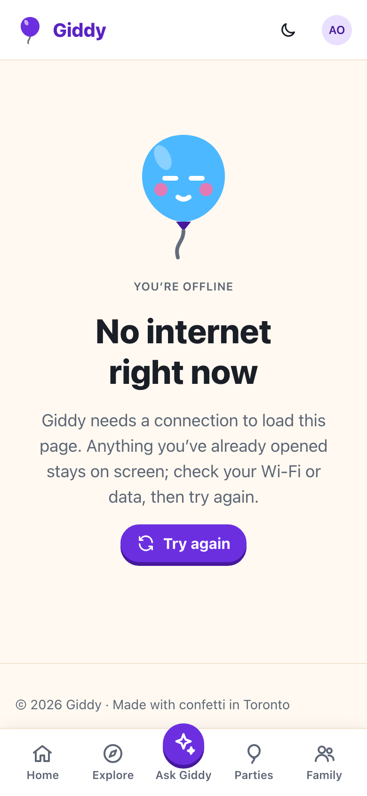

Giddy · Video 01
Set up the foundation
The shell, server-side authorisation, system states and the GTA
The shell, server-side authorisation, system states and the GTA
Dark theme is remembered on the device. Unknown links get a friendly 404 with a way home.

| Request | Answer |
|---|---|
| Not signed in | 401; cookie is HttpOnly, Secure, SameSite=Lax |
| Not a member of the party | 404, before validation runs |
| Viewer changes the party | 403, nothing changes |
Write without X-XSRF-TOKEN | 400 |
| Invalid name | 400 with field errors |
PartyAuthorizationBehavior runs before ValidationBehavior for every IPartyRequest
The shell stays, the parties are safe, and GDY-7Q2K is there to quote. Offline and back online banners follow.



| Rule | Example |
|---|---|
| Calendar days in America/Toronto | 20 days at 4:00 pm or 11:30 pm, across DST |
| Dates and times | Sat 14 Nov 2026 · 1:00–3:30 pm |
| Countdowns | Today · Tomorrow · 20 days to go |
| Postal codes | M4M 1H1 → Toronto · L6J 1H3 → Halton · K1A 0B1 → outside |
Built once from the design system. Stylelint rejects raw colours and z-index.
Fake database and clock; another family's token on every write.
Chromium, a fake API that fails unknown requests, axe at 360 and 1280px.
Next: chat with Giddy